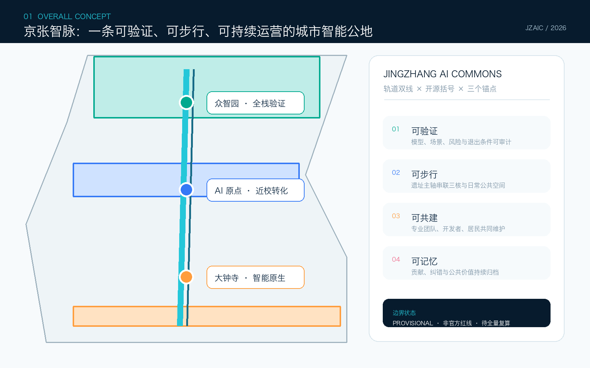
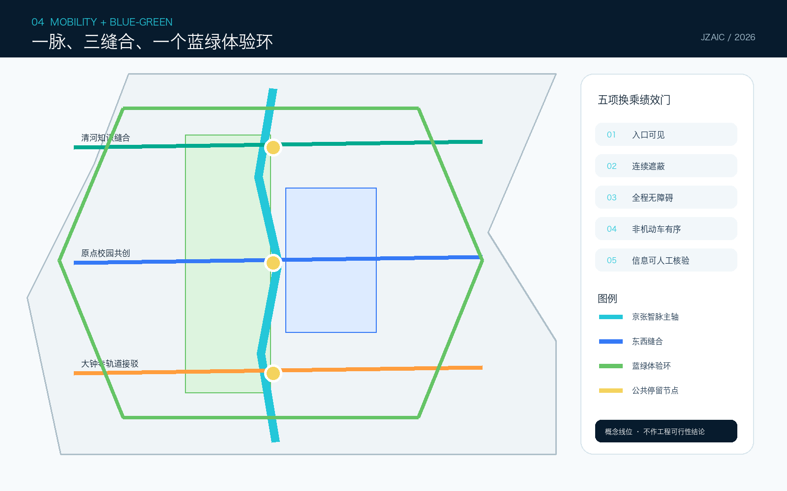

核心指标
总览地图 · 三层范围 · 用地分区

三层范围由统筹研究、总体设计、重点区域递进；临时边界只作为低对比约束。三区两翼通过遗址主轴、东西缝合和蓝绿体验环形成协同回路。
重点区域
众智园
全栈验证核：兼容评测、安全红队、治理开放厅、清河低碳创新廊。
AI 原点社区
近校转化核：开源发布、成果转化、社区算法诊所、人才日常服务。
大钟寺
智能原生消费核：四象限步行连续、国际路演、明示 AI 与人工退出。
交通慢行 · 蓝绿公共空间 · 建筑与更新项目

可逆更新
- 先用：首层、院落、屋顶、边角空间
- 再改：结构与权属核验后的轻改造
- 后建：仅在控规与专业论证完成后讨论
更新项目
断点清单、4 个受控测试、三核共享空间、贡献者档案、年度 Commons Week。均为概念建议。
AI 场景
全栈兼容验证工坊
产业测试验证城市智能体红队广场
产业测试验证端侧能耗与韧性赛道
产业测试验证无障碍慢行共测
产业测试验证开源发布与贡献墙
公共创新近校成果转化驿站
企业服务社区算法诊所
公共服务京张历史语音导览
文化清河低碳创新廊
生态大钟寺智能原生客厅
消费商务AI+生活服务样板街
专业服务全球 AI Commons Week
长期运营任务覆盖 · 自检状态
GeoJSON→metrics→matrices→proposal→figures / PDF / HTML
来源 · 假设
来源
官方公告、智能体任务书、住建/自然资源公开标准、仓库 provisional geometry、七个国际创新生态公开页面。无商业底图或远程素材。
假设
官方 boundary、控规、权属、测绘、交通、市政、消防、文保与生态资料待补；建筑与线位均为概念原型。
自检状态
提交前运行 deterministic、spatial、visual、professional 四类检查；组织方 geometry 缺口不阻断内容评分。